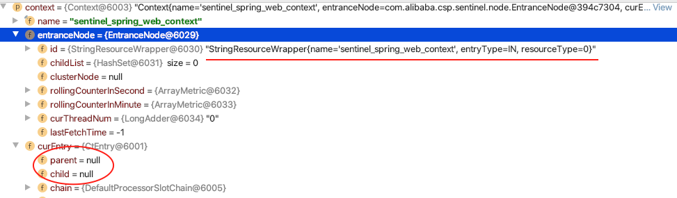
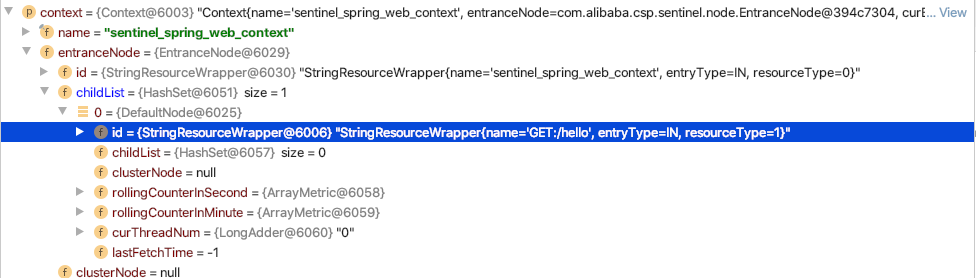
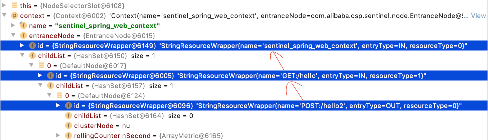
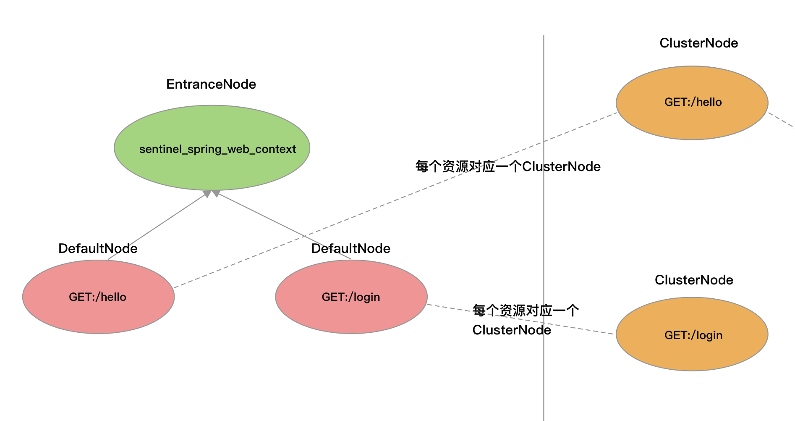

- 01 开篇词：一次服务雪崩问题排查经历.md.html
- 02 为什么需要服务降级以及常见的几种降级方式.md.html
- 03 为什么选择 Sentinel，Sentinel 与 Hystrix 的对比.md.html
- 04 Sentinel 基于滑动窗口的实时指标数据统计.md.html
- 05 Sentinel 的一些概念与核心类介绍.md.html
- 06 Sentinel 中的责任链模式与 Sentinel 的整体工作流程.md.html
- 07 Java SPI 及 SPI 在 Sentinel 中的应用.md.html
- 08 资源指标数据统计的实现全解析（上）.md.html
- 09 资源指标数据统计的实现全解析（下）.md.html
- 10 限流降级与流量效果控制器（上）.md.html
- 11 限流降级与流量效果控制器（中）.md.html
- 12 限流降级与流量效果控制器（下）.md.html
- 13 熔断降级与系统自适应限流.md.html
- 14 黑白名单限流与热点参数限流.md.html
- 15 自定义 ProcessorSlot 实现开关降级.md.html
- 16 Sentinel 动态数据源：规则动态配置.md.html
- 17 Sentinel 主流框架适配.md.html
- 18 Sentinel 集群限流的实现（上）.md.html
- 19 Sentinel 集群限流的实现（下）.md.html
- 20 结束语：Sentinel 对应用的性能影响如何？.md.html
- 21 番外篇：Sentinel 1.8.0 熔断降级新特性解读.md.html
- 捐赠
08 资源指标数据统计的实现全解析（上）
节点选择器：NodeSelectorSlot
NodeSelectorSlot 负责为资源的首次访问创建 DefaultNode，以及维护 Context.curNode 和调用树。NodeSelectorSlot 被放在 ProcessorSlotChain 链表的第一个位置，这是因为后续的 ProcessorSlot 都需要依赖这个 ProcessorSlot。NodeSelectorSlot 源码如下：
public class NodeSelectorSlot extends AbstractLinkedProcessorSlot<Object> {
// Context 的 name -> 资源的 DefaultNode
private volatile Map<String, DefaultNode> map = new HashMap<>(10);
// 入口方法
@Override
public void entry(Context context, ResourceWrapper resourceWrapper, Object obj, int count, boolean prioritized, Object... args) throws Throwable {
// 使用 Context 的名称作为 key 缓存资源的 DefaultNode
DefaultNode node = map.get(context.getName());
if (node == null) {
synchronized (this) {
node = map.get(context.getName());
if (node == null) {
// 为资源创建 DefaultNode
node = new DefaultNode(resourceWrapper, null);
// 替换 map
HashMap<String, DefaultNode> cacheMap = new HashMap<>(map.size());
cacheMap.putAll(map);
cacheMap.put(context.getName(), node);
map = cacheMap;
// 绑定调用树
((DefaultNode) context.getLastNode()).addChild(node);
}
}
}
// 替换 Context 的 curNode 为当前 DefaultNode
context.setCurNode(node);
fireEntry(context, resourceWrapper, node, count, prioritized, args);
}
// 出口方法什么也不做
@Override
public void exit(Context context, ResourceWrapper resourceWrapper, int count, Object... args) {
fireExit(context, resourceWrapper, count, args);
}
}
如源码所示，map 字段是一个非静态字段，意味着每个 NodeSelectorSlot 都有一个 map。由于一个资源对应一个 ProcessorSlotChain，而一个 ProcessorSlotChain 只创建一个 NodeSelectorSlot，并且 map 缓存 DefaultNode 使用的 key 并非资源 ID，而是 Context.name，所以 map 的作用是缓存针对同一资源为不同调用链路入口创建的 DefaultNode。
在 entry 方法中，首先根据 Context.name 从 map 获取当前调用链路入口的资源 DefaultNode，如果资源第一次被访问，也就是资源的 ProcessorSlotChain 第一次被创建，那么这个 map 是空的，就会加锁为资源创建 DefaultNode，如果资源不是首次被访问，但却首次作为当前调用链路（Context）的入口资源，也需要加锁为资源创建一个 DefaultNode。可见，Sentinel 会为同一资源 ID 创建多少个 DefaultNode 取决于有多少个调用链使用其作为入口资源，直白点就是同一资源存在多少个 DefaultNode 取决于 Context.name 有多少种不同取值，这就是为什么说一个资源可能有多个 DefaultNode 的原因。
为什么这么设计呢？
举个例子，对同一支付接口，我们需要使用 Spring MVC 暴露给前端访问，同时也可能会使用 Dubbo 暴露给其它内部服务调用。Sentinel 的 Web MVC 适配器在调用链路入口创建名为“sentinel_spring_web_context”的 Context，与 Sentinel 的 Dubbo 适配器调用 ContextUtil#enter 方法创建的 Context 名称不同。针对这种情况，我们可以实现只限制 Spring MVC 进来的流量，也就是限制前端发起接口调用的 QPS、并行占用的线程数等。
NodeSelectorSlot#entry 方法最难以理解的就是实现绑定调用树这行代码：
((DefaultNode) context.getLastNode()).addChild(node);
这行代码分两种情况分析更容易理解，我们就以 Sentinel 提供的 Demo 为例进行分析。
一般情况
Sentinel 的 sentinel-demo 模块下提供了多种使用场景的 Demo，我们选择 sentinel-demo-spring-webmvc 这个 Demo 为例，该 Demo 下有一个 hello 接口，其代码如下。
@RestController
public class WebMvcTestController {
@GetMapping("/hello")
public String apiHello() throws BlockException {
doBusiness();
return "Hello!";
}
}
我们不需要添加任何规则，只是为了调试 Sentinel 的源码。将 demo 启动起来后，在浏览器访问“/hello”接口，在 NodeSelectorSlot#entry 方法的绑定调用树这一行代码下断点，观察此时 Context 的字段信息。正常情况下我们可以看到如下图所示的结果。

从上图中可以看出，此时的 Context.entranceNode 的子节点为空（childList 的大小为 0），并且当前 CtEntry 父、子节点都是 Null（curEntry 字段）。当绑定调用树这一行代码执行完成后，Context 的字段信息如下图所示：

从上图可以看出，NodeSelectorSlot 为当前资源创建的 DefaultNode 被添加到了 Context.entranceNode 的子节点。entranceNode 类型为 EntranceNode，在调用 ContextUtil#enter 方法时创建，在第一次创建名为“sentinel_spring_web_context”的 Context 时创建，相同名称的 Context 都使用同一个 EntranceNode。并且该 EntranceNode 在创建时会被添加到 Constant.ROOT。
此时，Constant.ROOT、Context.entranceNode、当前访问资源的 DefaultNode 构造成的调用树如下：
ROOT (machine-root)
/
EntranceNode (context name: sentinel_spring_web_context)
/
DefaultNode （resource name: GET:/hello）
如果我们现在再访问 Demo 的其他接口，例如访问“/err”接口，那么生成的调用树就会变成如下：
ROOT (machine-root)
/
EntranceNode (context name: sentinel_spring_web_context)
/ \
DefaultNode （resource name: GET:/hello） DefaultNode （resource name: GET:/err）
Context.entranceNode 将会存储 Web 项目的所有资源（接口）的 DefaultNode。
存在多次 SphU#entry 的情况
比如我们在一个服务中添加了 Sentinel 的 Web MVC 适配模块的依赖，也添加了 Sentinel 的 OpenFeign 适配模块的依赖，并且我们使用 OpenFeign 调用内部其他服务的接口，那么就会存在一次调用链路上出现多次调用 SphU#entry 方法的情况。
首先 webmvc 适配器在接收客户端请求时会调用一次 SphU#entry，在处理客户端请求时可能需要使用 OpenFeign 调用其它服务的接口，那么在发起接口调用时，Sentinel 的 OpenFeign 适配器也会调用一次 SphU#entry。
现在我们将 Demo 的 hello 接口修改一下，将 hello 接口调用的 doBusiness 方法也作为资源使用 Sentinel 保护起来，改造后的 hello 接口代码如下：
@RestController
public class WebMvcTestController {
@GetMapping("/hello")
public String apiHello() throws BlockException {
ContextUtil.enter("my_context");
Entry entry = null;
try {
entry = SphU.entry("POST:http://wujiuye.com/hello2", EntryType.OUT);
// ==== 这里是被包装的代码 =====
doBusiness();
return "Hello!";
// ==== end ===============
} catch (Exception e) {
if (!(e instanceof BlockException)) {
Tracer.trace(e);
}
throw e;
} finally {
if (entry != null) {
entry.exit(1);
}
ContextUtil.exit();
}
}
}
我们可将 doBusiness 方法看成是远程调用，例如调用第三方的接口，接口名称为“http://wujiuye.com/hello2”，使用 POST 方式调用，那么我们可以使用“POST:http://wujiuye.com/hello2”作为资源名称，并将流量类型设置为 OUT 类型。上下文名称取名为”my_context”。
现在启动 demo，使用浏览器访问“/hello”接口。当代码执行到 apiHello 方法时，在 NodeSelectorSlot#entry 方法的绑定调用树这一行代码下断点。当绑定调用树这行代码执行完成后，Context 的字段信息如下图所示。

如图所示，Sentinel 并没有创建名称为 my_context 的 Context，还是使用应用接收到请求时创建名为“sentinel_spring_web_context”的 Context，所以处理浏览器发送过来的请求的“GET:/hello”资源是本次调用链路的入口资源，Sentinel 在调用链路入口处创建 Context 之后不再创建新的 Context。
由于之前并没有为名称为“POST:http://wujiuye.com/hello2”的资源创建 ProcessorSlotChain，所以 SphU#entry 会为该资源创建一个 ProcessorSlotChain，也就会为该 ProcessorSlotChain 创建一个 NodeSelectorSlot。在执行到 NodeSelectorSlot#entry 方法时，就会为该资源创建一个 DefaultNode，而将该资源的 DefaultNode 绑定到节点树后，该资源的 DefaultNode 就会成为“GET:/hello”资源的 DefaultNode 的子节点，调用树如下。
ROOT (machine-root)
/
EntranceNode (name: sentinel_spring_web_context)
/ \
DefaultNode （GET:/hello） .........
/
DefaultNode (POST:/hello2)
此时，当前调用链路上也已经存在两个 CtEntry，这两个 CtEntry 构造一个双向链表，如下图所示。
虽然存在两个 CtEntry，但此时 Context.curEntry 指向第二个 CtEntry，第二个 CtEntry 在 apiHello 方法中调用 SphU#entry 方法时创建，当执行完 doBusiness 方法后，调用当前 CtEntry#exit 方法，由该 CtEntry 将 Context.curEntry 还原为该 CtEntry 的父 CtEntry。这有点像入栈和出栈操作，例如栈帧在 Java 虚拟机栈的入栈和出栈，调用方法时方法的栈帧入栈，方法执行完成栈帧出栈。
NodeSelectorSlot#entry 方法我们还有一行代码没有分析，就是将当前创建的 DefaultNode 设置为 Context 的当前节点，代码如下：
// 替换 Context.curNode 为当前 DefaultNode
context.setCurNode(node);
替换 Context.curNode 为当前资源 DefaultNode 这行代码就是将当前创建的 DefaultNode 赋值给当前 CtEntry.curNode。对着上图理解就是，将资源“GET:/hello”的 DefaultNode 赋值给第一个 CtEntry.curNode，将资源“POST:http://wujiuye.com/hello2”的 DefaultNode 赋值给第二个 CtEntry.curNode。
要理解 Sentinel 构造 CtEntry 双向链表的目的，首先我们需要了解调用 Context#getCurNode 方法获取当前资源的 DefaultNode 可以做什么。
Tracer#tracer 方法用于记录异常。以异常指标数据统计为例，在发生非 Block 异常时，Tracer#tracer 需要从 Context 获取当前资源的 DefaultNode，通知 DefaultNode 记录异常，同时 DefaultNode 也会通知 ClusterNode 记录记录，如下代码所示。
public class DefaultNode extends StatisticNode {
......
@Override
public void increaseExceptionQps(int count) {
super.increaseExceptionQps(count);
this.clusterNode.increaseExceptionQps(count);
}
}
这个例子虽然简单，但也足以说明 Sentinel 构造 CtEntry 双向链表的目的。
ClusterNode 构造器：ClusterBuilderSlot
ClusterNode 出现的背景
在一个资源的 ProcessorSlotChain 中，NodeSelectorSlot 负责为资源创建 DefaultNode，这个 DefaultNode 仅限同名的 Context 使用。所以一个资源可能会存在多个 DefaultNode，那么想要获取一个资源的总的 QPS 就必须要遍历这些 DefaultNode。为了性能考虑，Sentinel 会为每个资源创建一个全局唯一的 ClusterNode，用于统计资源的全局并行占用线程数、QPS、异常总数等指标数据。
ClusterBuilderSlot
与 NodeSelectorSlot 的职责相似，ClusterBuilderSlot 的职责是为资源创建全局唯一的 ClusterNode，仅在资源第一次被访问时创建。ClusterBuilderSlot 还会将 ClusterNode 赋值给 DefaultNode.clusterNode，由 DefaultNode 持有 ClusterNode，负责管理 ClusterNode 的指标数据统计。这点也是 ClusterBuilderSlot 在 ProcessorSlotChain 链表中必须排在 NodeSelectorSlot 之后的原因，即必须先有 DefaultNode，才能将 ClusterNode 交给 DefaultNode 管理。
ClusterBuilderSlot 的源码比较多，本篇只分析其实现 ProcessorSlot 接口的 entry 和 exit 方法。ClusterBuilderSlot 删减后的源码如下。
public class ClusterBuilderSlot extends AbstractLinkedProcessorSlot<DefaultNode> {
// 资源 -> ClusterNode
private static volatile Map<ResourceWrapper, ClusterNode> clusterNodeMap = new HashMap<>();
private static final Object lock = new Object();
// 非静态，一个资源对应一个 ProcessorSlotChain，所以一个资源共用一个 ClusterNode
private volatile ClusterNode clusterNode = null;
@Override
public void entry(Context context, ResourceWrapper resourceWrapper, DefaultNode node, int count,
boolean prioritized, Object... args)
throws Throwable {
if (clusterNode == null) {
synchronized (lock) {
if (clusterNode == null) {
// 创建 ClusterNode
clusterNode = new ClusterNode(resourceWrapper.getName(), resourceWrapper.getResourceType());
// 添加到缓存
HashMap<ResourceWrapper, ClusterNode> newMap = new HashMap<>(Math.max(clusterNodeMap.size(), 16));
newMap.putAll(clusterNodeMap);
newMap.put(node.getId(), clusterNode);
clusterNodeMap = newMap;
}
}
}
// node 为 NodeSelectorSlot 传递过来的 DefaultNode
node.setClusterNode(clusterNode);
// 如果 origin 不为空，则为远程创建一个 StatisticNode
if (!"".equals(context.getOrigin())) {
Node originNode = node.getClusterNode().getOrCreateOriginNode(context.getOrigin());
context.getCurEntry().setOriginNode(originNode);
}
fireEntry(context, resourceWrapper, node, count, prioritized, args);
}
@Override
public void exit(Context context, ResourceWrapper resourceWrapper, int count, Object... args) {
fireExit(context, resourceWrapper, count, args);
}
}
ClusterBuilderSlot 使用一个 Map 缓存资源的 ClusterNode，并且用一个非静态的字段维护当前资源的 ClusterNode。因为一个资源只会创建一个 ProcessorSlotChain，意味着 ClusterBuilderSlot 也只会创建一个，那么让 ClusterBuilderSlot 持有该资源的 ClusterNode 就可以省去每次都从 Map 中获取的步骤，这当然也是 Sentinel 为性能做出的努力。
ClusterBuilderSlot#entry 方法的 node 参数由前一个 ProcessorSlot 传递过来，也就是 NodeSelectorSlot 传递过来的 DefaultNode。ClusterBuilderSlot 将 ClusterNode 赋值给 DefaultNode.clusterNode，那么后续的 ProcessorSlot 就能从 node 参数中取得 ClusterNode。DefaultNode 与 ClusterNode 的关系如下图所示。

ClusterNode 有一个 Map 类型的字段用来缓存 origin 与 StatisticNode 的映射，代码如下：
public class ClusterNode extends StatisticNode {
private final String name;
private final int resourceType;
private Map<String, StatisticNode> originCountMap = new HashMap<>();
}
如果上游服务在调用当前服务的接口传递 origin 字段过来，例如可在 http 请求头添加“S-user”参数，或者 Dubbo rpc 调用在请求参数列表加上“application”参数，那么 ClusterBuilderSlot 就会为 ClusterNode 创建一个 StatisticNode，用来统计当前资源被远程服务调用的指标数据。
例如，当 origin 表示来源应用的名称时，对应的 StatisticNode 统计的就是针对该调用来源的指标数据，可用来查看哪个服务访问这个接口最频繁，由此可实现按调用来源限流。
ClusterNode#getOrCreateOriginNode 方法源码如下：
public Node getOrCreateOriginNode(String origin) {
StatisticNode statisticNode = originCountMap.get(origin);
if (statisticNode == null) {
try {
lock.lock();
statisticNode = originCountMap.get(origin);
if (statisticNode == null) {
statisticNode = new StatisticNode();
// 这几行代码在 Sentinel 中随处可见
HashMap<String, StatisticNode> newMap = new HashMap<>(originCountMap.size() + 1);
newMap.putAll(originCountMap);
newMap.put(origin, statisticNode);
originCountMap = newMap;
}
} finally {
lock.unlock();
}
}
return statisticNode;
}
为了便于使用，ClusterBuilderSlot 会将调用来源（origin）的 StatisticNode 赋值给 Context.curEntry.originNode，后续的 ProcessorSlot 可调用 Context#getCurEntry#getOriginNode 方法获取该 StatisticNode。这里我们可以得出一个结论，如果我们自定义的 ProcessorSlot 需要用到调用来源的 StatisticNode，那么在构建 ProcessorSlotChain 时，我们必须要将这个自定义 ProcessorSlot 放在 ClusterBuilderSlot 之后。
© 2019 - 2023 Liangliang Lee. Powered by gin and hexo-theme-book.